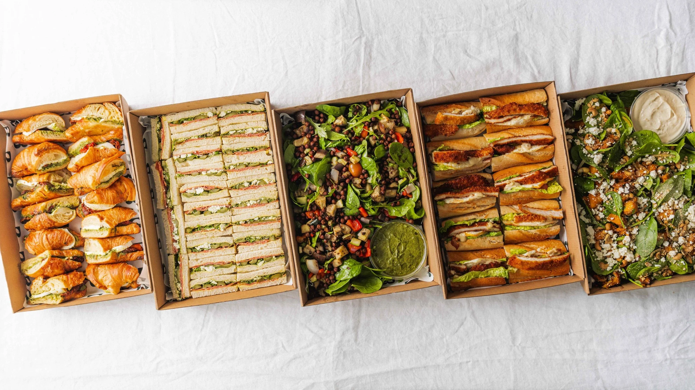

Office & meeting meals
Plan a lunch that suits your team’s schedule and space.
CATERING & DELIVERED MEALS
Delivered catering for offices, meetings, and crews. A practical way to bring people together, with the menu and delivery details considered in advance.
Request a catering quote
CONSIDERED FROM THE START
When delivery is the right fit, we help you think through the meal, portions, presentation, and access at your location. Any setup, service equipment, or staffing needs can be discussed separately and confirmed in your proposal.
DELIVERED MEALS & WORKING LUNCHES

A convenient format for individual office lunches.

Another presentation for meetings and delivered meals.
Interested in individually boxed meals? Include that in your inquiry so packaging and contents can be confirmed. The photos above illustrate individual sandwich meals and shared wrap platters.
A CLEAR DELIVERY PLAN
A few practical details make delivered catering easier to receive and serve.
Confirm the full address, entrance, parking or loading instructions, and access restrictions.
Name someone who can receive the delivery and answer on-the-day questions.
Discuss table space, serving pieces, labels, dietary requirements, and any setup support.
PRACTICAL PLANNING
Read the lead times, service arrangements, and booking terms before you inquire.
Ordering, delivery & booking termsBoxed lunches and drop-off meals for fewer than 50 people need 2 business days; groups of 50–150 need 5 business days. Meeting catering with setup or staff needs 7 days. Delivery orders start at 10 people. Rush requests depend on availability and carry a 20% fee.
Delivery is scheduled 30 minutes before your start time. Setup with chafers and display is $75–$125, depending on size. We set up and label the food; moving furniture, audiovisual support, and cleanup require a staffed-service booking. Delivery pricing is confirmed in your proposal.
We serve metro Atlanta. Locations outside metro Atlanta are quoted separately. Share your venue or city in the initial inquiry so we can confirm the arrangements.
Share requested meal counts and allergies when ordering. Each boxed meal is labelled with the person’s name or diet type and the major allergens it contains. Meals are prepared in a shared kitchen; we cannot guarantee allergen-free food.
Corporate one-time orders are paid by card at ordering; approved repeat accounts may use Net 15 invoicing. Government agencies may use purchase card or Net 30 with a purchase order. Events and bar service require a 50% deposit, with the balance due 7 days before.
SOUTHERN CRESCENT HOSPITALITY